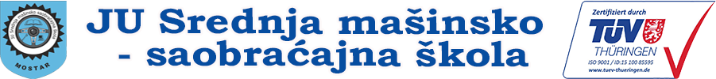

Secondary School of Mechanical and Traffic Engineering

I attended the JU Srednja Mašinsko-Saobraćajna Škola (Secondary School of Mechanical and Traffic Engineering) in Mostar, Bosnia and Herzegovina, specializing in CNC machine programming. This period was pivotal in sparking my passion for technology and data science, thanks to the valuable mentorships, and lessons that continue to inspire my journey.
Throughout my studies, I gained both theoretical and practical knowledge in CNC machining. The
curriculum provided training in CNC programming, allowing me to develop precise instructions for
machining processes, alongside hands-on experience with CNC machines. I also became proficient in
technical drawing and CAD software, enabling me to create accurate digital models. These
experiences strengthened my technical expertise and problem-solving skills in machine operations
and production workflows. My education also laid the foundation for software development and
automation. I worked with G-code for CNC control and developed my skills in Python, C++, and
Java, which sparked my interest in automation, data processing, and software engineering. I
explored how these languages could optimize workflows, automate processes, and handle large
datasets. I also worked with CAM software like Fusion 360, SolidWorks, and Mastercam, developing
my skills to translate models into machine instructions. These experiences helped me develop the
ability to write efficient code, optimize machining processes, and combine software with
mechanical engineering to solve problems and improve efficiency.
The quality management system at my school was certified by TÜV to meet ISO 9001 standards,
ensuring adherence to high-quality benchmarks. This certification not only reinforced my
understanding of quality's importance in manufacturing and software development but also
highlighted benefits such as improved risk management, enhanced stakeholder satisfaction, and a
commitment to continuous improvement. Additionally, ISO 9001 implementation fosters clear role
definitions, data-driven decision-making, and standardized procedures, contributing to
operational excellence within educational settings.
Skills and Competencies Developed
- CNC Programming and Operation: Gained proficiency in programming and operating CNC machines, translating design specifications into precise manufacturing instructions.
- Technical Drawing and CAD Software: Developed skills in creating detailed technical drawings and using CAD software to design machine components.
- Problem-Solving Abilities: Enhanced analytical skills to troubleshoot and resolve issues in machine operations and production processes.
- Software Development Fundamentals: Acquired foundational knowledge in software development, including algorithms, data structures, and programming languages relevant to automation and manufacturing systems.
- Team Collaboration: Participated in group projects and workshops, fostering effective communication and teamwork skills essential for collaborative engineering environments.
- Attention to Detail: Cultivated a meticulous approach to ensure precision in programming and machining tasks, crucial for maintaining high-quality production standards.
Visit Website